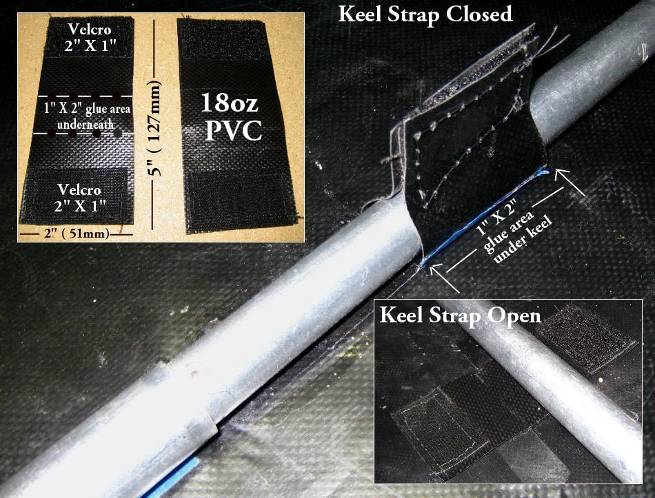

| Sonnet (Keel Straps) | Menu Previous Page Next Page |
|

Two keel straps keep the keel centered. The Velcro / PVC straps are glued along the inside hull centerline and are positioned approximately 36" (91mm) apart. Use the 32" (81cm ) coaming as a reference for forward and aft location. An alternative method is have the Velcro overlap around the tube. The Velcro has been sewn onto the PVC in this example. Adhesive backed Velcro can be used, but over time, it has not proven to hold up.
|
|